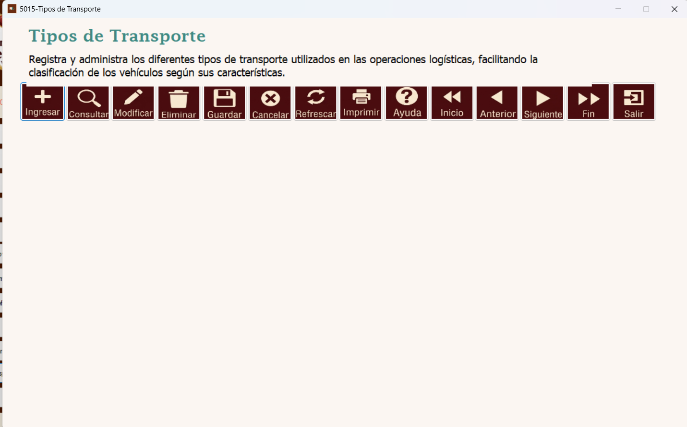
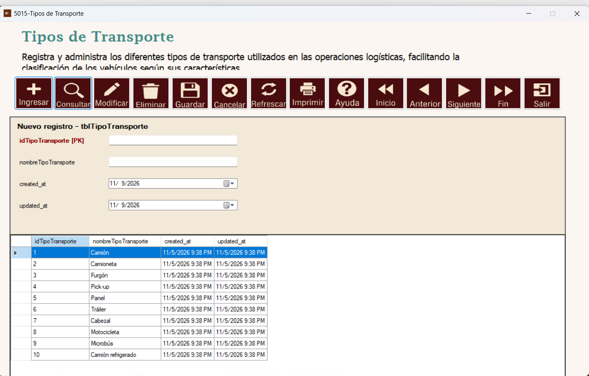
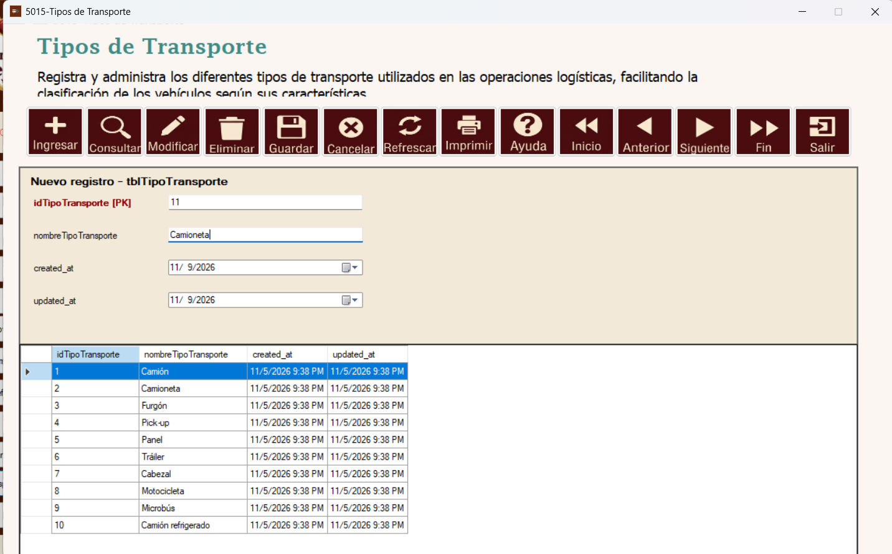
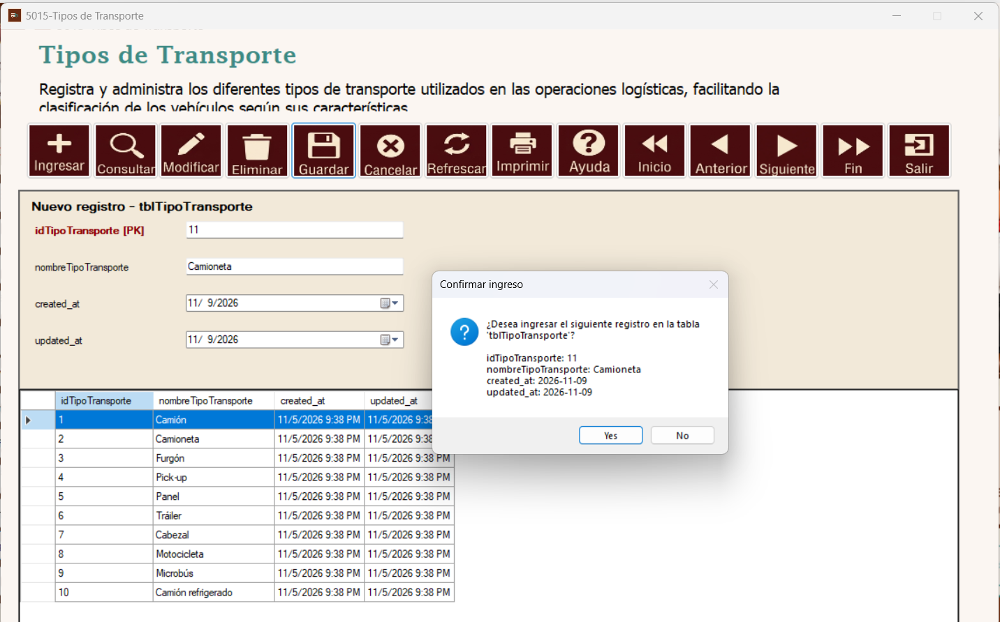
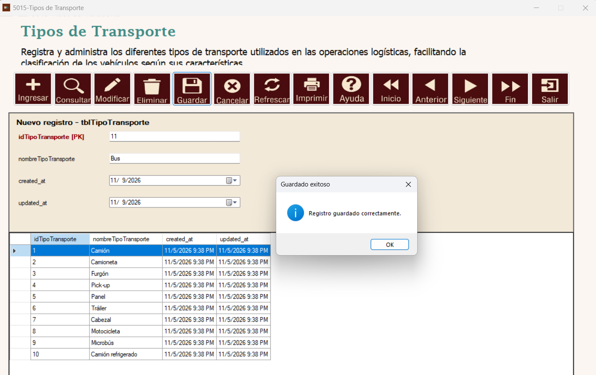
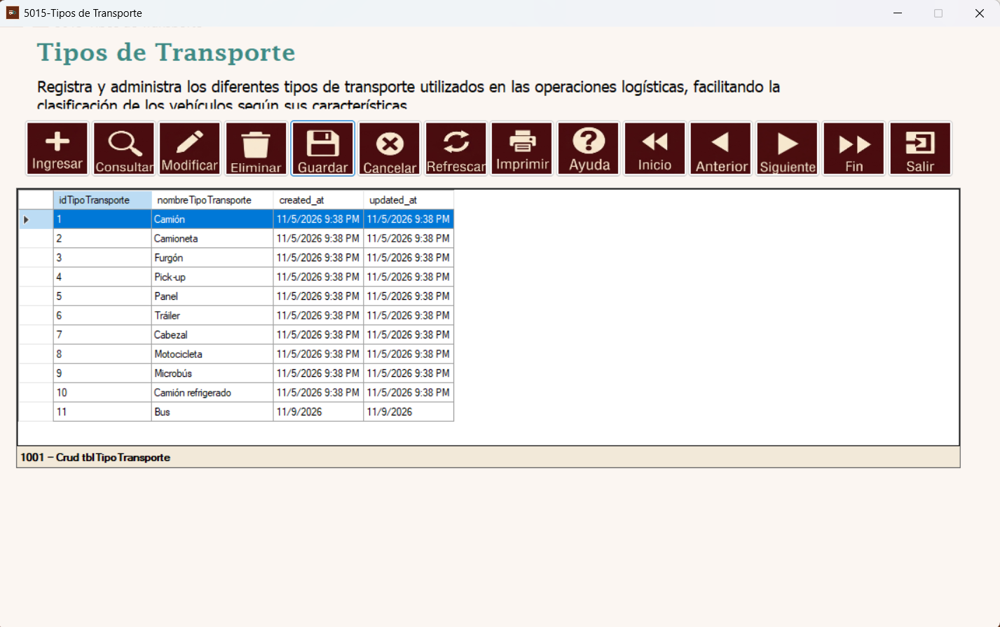
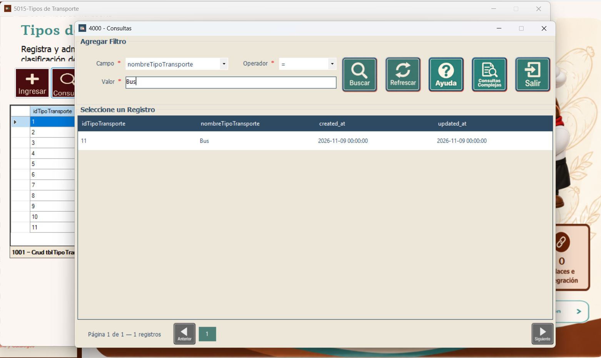
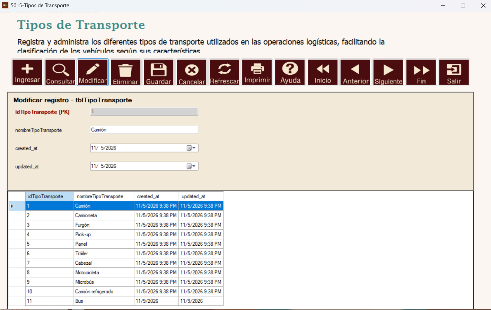
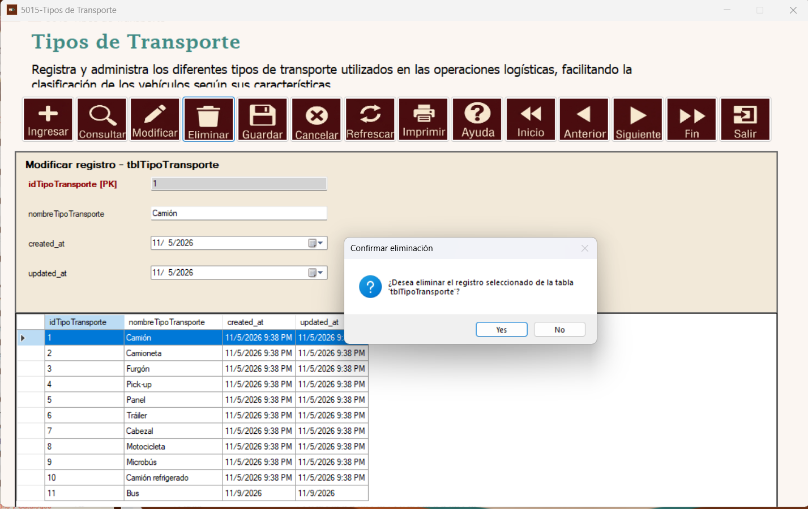

Módulo Logística | Formulario 5015 – Tipos de Transporte | tblTipoTransporte
Este manual explica paso a paso el uso del mantenimiento de tipos de transporte mediante las capturas originales del sistema.
El mantenimiento 5015 – Tipos de Transporte permite registrar y administrar las categorías que clasifican los vehículos de las operaciones logísticas. La barra superior contiene las opciones del Navegador y el listado muestra los registros disponibles.

Pantalla principal del mantenimiento de Tipos de Transporte.
Presione Ingresar para abrir el panel Nuevo registro – tblTipoTransporte. Aparecerán los campos del tipo de transporte y, debajo, la tabla de registros existentes.

Formulario para ingresar un tipo de transporte.
Escriba el nombre del tipo de transporte en nombreTipoTransporte (por ejemplo, Bus, Camión o Camioneta). El campo idTipoTransporte es la clave primaria. Revise los campos de fecha created_at y updated_at como los presenta el formulario. Antes de continuar, verifique que el nombre sea correcto y no represente una categoría duplicada.

Ejemplo de captura de los datos del tipo de transporte.
Presione Guardar. El sistema mostrará una confirmación con el identificador y el nombre que se pretende registrar. Seleccione Yes / Sí para confirmar o No para regresar sin confirmar la operación.

Cuadro de confirmación previo al ingreso en tblTipoTransporte.
Cuando se completa el registro aparece Registro guardado correctamente. Presione OK para cerrar el mensaje. Las capturas corresponden a ejemplos de ingreso distintos: el ejemplo guardado muestra el nombre Bus.

Notificación de guardado exitoso.
Revise la tabla inferior para comprobar que el tipo de transporte aparezca con su identificador, nombre y fechas de creación y actualización. En la captura se observa el registro Bus con identificador 11.

Resultado del registro de Bus en el listado.
Presione Consultar para abrir la ventana 4000 – Consultas. Seleccione el Campo (por ejemplo, nombreTipoTransporte), indique el Operador y escriba el Valor de búsqueda. Pulse Buscar y seleccione un resultado de la tabla. Refrescar actualiza la consulta; Salir cierra esta ventana.

Consulta filtrada por nombreTipoTransporte = Bus.
Seleccione el registro que desea actualizar y pulse Modificar. El sistema abrirá Modificar registro – tblTipoTransporte, con el identificador sin edición. Actualice nombreTipoTransporte si es necesario y presione Guardar. Confirme los cambios cuando el sistema lo solicite y compruebe el resultado en el listado.

Pantalla para modificar el nombre de un tipo de transporte.
Seleccione el registro que desea quitar y presione Eliminar. Cuando aparezca la pregunta ¿Desea eliminar el registro seleccionado de la tabla tblTipoTransporte?, pulse Yes / Sí para confirmar o No para cancelar. La imagen muestra la confirmación previa, no una eliminación ya completada. Si el registro está relacionado con vehículos, la base de datos podría impedir la operación.

Ventana de confirmación de eliminación de un tipo de transporte.
| Campo | Descripción |
|---|---|
idTipoTransporte | Identificador principal o llave primaria del tipo de transporte. |
nombreTipoTransporte | Nombre de la categoría para clasificar vehículos. |
created_at | Fecha registrada para la creación del registro. |
updated_at | Fecha registrada para su última actualización. |
Cancelar: abandona la captura o modificación en curso. Refrescar: actualiza la tabla. Imprimir: utiliza la opción de impresión del Navegador. Ayuda: abre la documentación del formulario. Inicio, Anterior, Siguiente y Fin: permiten recorrer registros. Salir: cierra el mantenimiento.